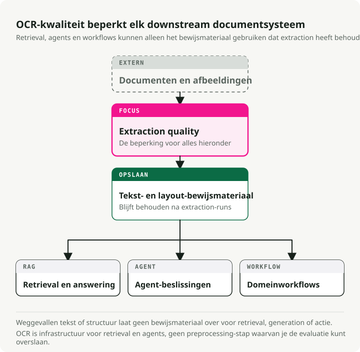
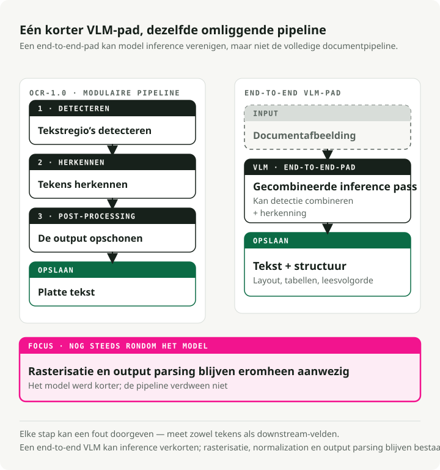
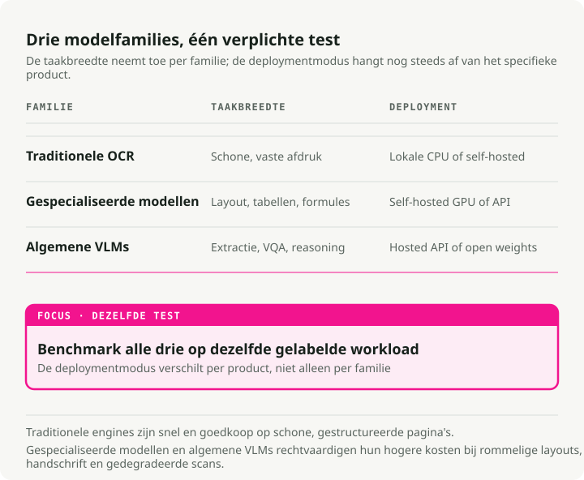
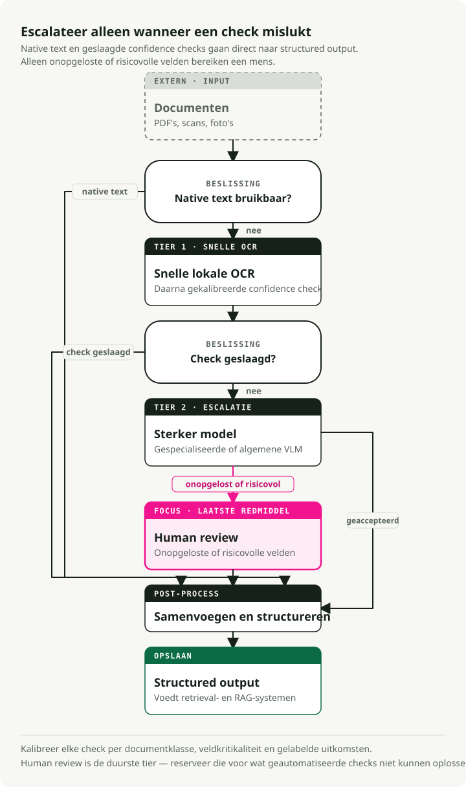

Automatische vertaling
Dit artikel is automatisch vertaald vanuit de oorspronkelijke Engelse versie.
De definitieve gids voor OCR in 2026: van pipelines naar VLM's
Het model dat bovenaan de populairste OCR-benchmark staat, eindigt bijna onderaan wanneer echte gebruikers de kwaliteit beoordelen. Het veld beweegt zo snel dat de benchmarks niet meer bijblijven — en OCR is belangrijker dan vroeger, omdat elke RAG-pipeline en documentassistent eerst tekst erdoorheen moet halen.
Vision-Language Models (VLM's) leiden tekstextractie op complexe documenten, met een 3–4× lagere Character Error Rate (CER) dan traditionele engines op ruisende scans, kassabonnen en vervormde tekst. Op het OCR Arena-klassement begin 2026 staat Gemini 3 Flash bovenaan, gevolgd door Gemini 3 Pro, Claude Opus 4.6 en GPT-5.2. General-purpose frontier-modellen verslaan nu dedicated OCR-systemen op echte documenten. Open-sourcemodellen zoals dots.ocr (1.7B params, 100+ talen) en Qwen3-VL (2B–235B) brengen je bijna helemaal daartegenaan voor vrijwel nul inferentiekosten.
Traditionele engines zijn nog steeds de snelste en goedkoopste optie voor schone geprinte documenten, en niets wint in elk scenario. Deze gids behandelt de benchmarks, de modellen, de metrics en hoe je dit daadwerkelijk in productie uitrolt.
Companion-repo: The OCR Gauntlet — een demo in één notebook die 5 documenttypen vergelijkt over 3 modeltiers (Tesseract → dots.ocr → Gemini 3 Flash) om kwaliteitskloven en kostenafwegingen zichtbaar te maken.
TL;DR: OCR-1.0 (modulaire pipelines) maakt plaats voor OCR-2.0 (end-to-end VLM's). Voor schone flatbed-scans van eenvoudige tekst blijft traditionele OCR (PaddleOCR/Tesseract) onverslaanbaar qua kosten. Voor complexe layouts, kassabonnen, handschrift of scheve foto's heb je VLM's nodig. Frontier-API's zoals Gemini 3 Flash zijn de huidige state of the art; open-sourcemodellen zoals dots.ocr en Qwen3-VL zijn sterke self-hosted alternatieven.
Waarom OCR nu belangrijk is
Decennialang was OCR een stille uithoek van de informatica. Het digitaliseerde bibliotheekarchieven, sorteerde post en dreef toegankelijkheidstools voor slechtzienden aan. Belangrijk werk, maar niche. Als je niet in documentbeheer of logistiek zat, kon je het veilig negeren.
Dat veranderde toen LLM's mainstream werden. Elke RAG-pipeline, enterprise knowledge assistant en documentlezende agent loopt tegen dezelfde muur aan: de LLM kan alleen werken met tekst die hij daadwerkelijk kan lezen. Plots moesten miljoenen PDF's, gescande contracten, facturen en medische dossiers worden omgezet naar schone gestructureerde tekst op productieschaal. OCR ging van een min of meer opgelost probleem naar een harde bottleneck voor de rest van de AI-stack.

De gevolgen stapelen zich op. De retrievalkwaliteit van je RAG-systeem wordt begrensd door je OCR-kwaliteit. Als extractie een tabel verhaspelt, een datum verkeerd leest of een alinea weglaat, lost geen enkele slimme chunking of embedding-tuning dat downstream op. Een contractanalysetool die een clausule mist die in een slecht gescande appendix verstopt zit, is een juridisch risico. Hetzelfde geldt voor factuurverwerking, compliance review en parsing van medische dossiers. OCR-fouten propageren door elke downstreambeslissing.
Daarom staat OCR weer op de agenda. De aanbodkant (betere modellen, VLM's die pipelines vervangen) is maar de helft van het verhaal. De andere helft is dat OCR nu infrastructuur is — net zo cruciaal als vectordatabases of embeddingmodellen in de moderne AI-stack.
Wat OCR betekent in het tijdperk van foundation models
OCR is zijn oorspronkelijke definitie van "geprinte tekst omzetten naar machineleesbare tekens" ontgroeid. Vandaag is het documentintelligentie: tekst, structuur, tabellen, formules en semantische betekenis extraheren uit elke visuele input. Het veld verschuift van "OCR-1.0" (modulaire pipelines) naar "OCR-2.0", waarbij één end-to-end model alle stappen afhandelt.

De traditionele OCR-pipeline heeft drie kernstappen:
- Text detection: regio's lokaliseren die tekst bevatten (bijv. CRAFT, DBNet).
- Text recognition: gedetecteerde regio's omzetten naar tekenreeksen (bijv. CRNN).
- Post-processing: spellingcontrole en correctie met taalmodellen.
Dit werkt goed voor schone documenten. Maar fouten stapelen zich op. Een character error rate van 2% per stap groeit uit tot 15–20% informatie-extractiefalen op kassabonnen.
OCR-2.0 vouwt die pipeline samen tot één vision encoder + language decoder die het document direct leest. Modellen zoals GOT-OCR 2.0 en VLM's zoals Gemini 3 Flash brengen contextueel redeneren naar deze taak. Ze kunnen afleiden dat "MFG: 10/24" een productiedatum is, geen vervaldatum. De trade-off is snelheid: VLM's draaien 5–10× langzamer dan traditionele engines en hallucineren soms plausibel ogende tekst die simpelweg fout is.
Een praktische nuance: laat je niet misleiden door het label "end-to-end". In productie is OCR-2.0 alleen verenigd in de recognition-stap. Je hebt nog steeds PDF-rasterisatie nodig om afbeeldingen te maken, beeldnormalisatie (deskew, DPI-aanpassing) voor consistente kwaliteit, en outputparsing om gestructureerde velden uit de modeltekst te halen. De pipeline is korter geworden, niet verdwenen.
Het benchmarklandschap (waar we staan in 2026)
Zes datasets dragen vandaag het grootste deel van het OCR-evaluatiewerk:
| Dataset | Jaar | Testgrootte | Talen | Primaire metric | Topscore | Verzadiging |
|---|---|---|---|---|---|---|
| FUNSD | 2019 | 50 docs | Engels | F1 | ~93.5% | Gemiddeld |
| SROIE | 2019 | 347 bonnen | Engels | F1 | ~98.7% | Bijna verzadigd |
| CORD | 2019 | 100 bonnen | Indonesisch | F1 | ~98.2% | Bijna verzadigd |
| IAM | 1999 | ~1,861 regels | Engels | CER | ~2.75% | Gemiddeld |
| OCRBench v2 | 2024 | 1,500 privaat | EN + CN | Score /100 | 63.4 | Laag |
| OmniDocBench | 2024 | 1,355 pagina's | EN + CN | Samengesteld | 94.62 | Laag-gemiddeld |
De kloof tussen "benchmark vs. arena"
Geautomatiseerde benchmarkranglijsten botsen vaak met menselijke beoordeling in de praktijk, en die kloof is groot.
| Model | OmniDocBench | OCR Arena ELO | Arena winrate | Kloof |
|---|---|---|---|---|
| GLM-OCR | 94.62 | 1321 | 18.8% | Hoge bench, lage arena |
| Gemini 2.5 Pro | 88.03 | 1569 | -- | Goede bench, goede arena |
| Gemini 3 Flash | 0.115 ED (lager=beter) | 1770 | 77.2% | Gemiddelde bench, #1 arena |
| DeepSeek-OCR | Goed | 1335 | 20.2% | Hoge bench, lage arena |
Op het onafhankelijke communityplatform OCR Arena, waar gebruikers blind stemmen in head-to-head-battles, winnen frontier-VLM's de vergelijkingen. GLM-OCR en DeepSeek-OCR, die geautomatiseerde benchmarks zoals OmniDocBench domineren, staan hier bijna onderaan.
De waarschijnlijke verklaring: geautomatiseerde benchmarks wegen specifieke documenttypen en formatting te zwaar mee, terwijl mensen geven om leesbaarheid over het volledige spectrum van rommelige documenten uit de echte wereld. Vertrouw niet alleen op gepubliceerde benchmarkcijfers. Test op je eigen documenttypen.
Traditionele OCR-engines: nog steeds relevant
Als traditionele engines slechter zijn op complexe data, waarom ze dan nog gebruiken? Omdat ze snel en goedkoop zijn op schone gestructureerde data.
| Engine | Snelheid (CPU) | Nauwkeurigheid op schone docs | Talen | Minimale deploymentgrootte |
|---|---|---|---|---|
| Tesseract 5.5 | ~0.5s/pagina | 98–99% CER | 100+ | ~30 MB |
| EasyOCR | ~2s/pagina | 95–97% CER | 80+ | ~200 MB |
| PaddleOCR v5 | ~1s/pagina | 97–99% CER | 106+ | 3.5 MB (mobiel) |
Tesseract: nog steeds de standaard voor schone print
Tesseract (v5.5.x, Apache 2.0) is de meest gebruikte open-source-engine. Het haalt 98–99% nauwkeurigheid op schone geprinte documenten van 300+ DPI, ondersteunt 100+ talen, en draait CPU-only zonder inferentiekosten. De beperkingen zijn ook bekend: het is slecht in handschrift, scene text en complexe layouts. Maar voor enorme archieven met schone tekst verslaat niets het op kosten.
EasyOCR
EasyOCR combineert een CRAFT-detector met een CRNN-recognizer. Met volledige PyTorch GPU-acceleratie is het een snelle optie voor prototyping en scene text.
import easyocr
# Three lines for complete OCR
reader = easyocr.Reader(["en"])
result = reader.readtext("receipt.jpg")
# Returns: [(bbox, text, confidence), ...]
PaddleOCR
PaddleOCR (PP-OCRv5) is de meest productieklare traditionele engine. Een PP-HGNetV2-backbone, gedistilleerd uit GOT-OCR 2.0, dekt 106+ talen. De mobiele versie comprimeert tot slechts 3.5MB voor edge deployment.
from paddleocr import PaddleOCR
ocr = PaddleOCR(use_angle_cls=True, lang="en")
result = ocr.ocr("receipt.jpg", cls=True)
for line in result[0]:
bbox, (text, confidence) = line
if confidence > 0.85:
print(f"{text} ({confidence:.2f})")
VLM's nemen over: gespecialiseerde en general-purpose modellen

Zodra je de zone van "schone scan" verlaat en de echte wereld in gaat (scheve kassabonnen, scheef gefotografeerde productlabels, kleine letters), kunnen traditionele engines niet meer meekomen.
De golf van gespecialiseerde OCR
In 2025–2026 verscheen een golf van gespecialiseerde modellen voor documentparsing:
- dots.ocr (1.7B): Een open-sourcemodel dat layoutdetectie, recognition en leesvolgorde verenigt. Het ondersteunt 100+ talen en presteert beter dan modellen die 20× zo groot zijn op OmniDocBench.
- GOT-OCR 2.0: Een uniform model met 580M parameters dat op één consumer GPU draait (~4GB VRAM) en Markdown, LaTeX en gestructureerde notatie uitvoert.
- DeepSeek-OCR (3B): Introduceerde "contextual optical compression", waarmee vision tokens met 7–20× worden teruggebracht. Het kan 200,000+ pagina's/dag verwerken op één A100.
- Mistral OCR v3: Een proprietary model dat specifiek is geoptimaliseerd voor tekstextractie en structuur. Geprijsd op \(2/1K pagina's (\)1 met batch API) haalt het 96.6% op complexe tabellen en 88.9% op handschrift.
Frontier-VLM's
Voor complexe visuele redenering of sterk ongestructureerde documenten grijp je naar de frontier-generalisten:
- Qwen3-VL (Alibaba): De leidende open-source VLM-familie voor OCR (2B tot 235B). Native 256K-token context, blijft sterk bij weinig licht en blur, ondersteunt 32 talen.
- Gemini 3 Flash (Google): Momenteel het topmodel op OCR Arena. Het combineert Pro-level reasoning met Flash-tier latency en pricing ($0.50/M tokens).
- Claude Opus 4.6 (Anthropic): Sterk in gestructureerde JSON-extractie uit grafieken en in multi-step reasoning over documentinhoud.
- GPT-5.2 (OpenAI): Gaat goed om met dichte multi-column layouts, inclusief mixed-format documenten met tabellen, tekst en figuren.
Latency per tier
In productie is latency net zo belangrijk als nauwkeurigheid:
| Tier | Voorbeeld | Latency/pagina | Hardware |
|---|---|---|---|
| Traditioneel | Tesseract, PaddleOCR | 0.5–3s | CPU |
| Gespecialiseerde VLM | dots.ocr, GOT-OCR | 3–8s | GPU |
| Frontier VLM | Gemini Flash, GPT-5.2 | 5–15s | API |
Metrics: meten wat telt
Kies een metric die past bij het outputtype:
- CER en WER voor platte tekst. Character / Word Error Rate. Een goede CER is 1–2% op geprinte tekst. Let op: preprocessingkeuzes (case folding, whitespace) kunnen CER met 5–15% verschuiven, dus leg eerst het vergelijkingsprotocol vast voordat je modellen vergelijkt.
- EMR en Field F1 voor formulieren en kassabonnen. Exact Match Rate is binair, wat precies is wat je wilt voor btw-nummers en totalen. Field F1 balanceert precision en recall per veldtype.
- TEDS voor tabellen. Tree Edit Distance op HTML-tree-representaties vangt multi-hop verkeerde celuitlijning die CER verbergt.
- ANLS voor document-VQA. Average Normalized Levenshtein Similarity geeft gedeeltelijke credit voor antwoorden met kleine OCR-fouten.
Voor implementaties: jiwer ondersteunt CER/WER direct, en TEDS-implementaties staan in de OmniDocBench-repo.
VLM's testen met OpenRouter
OpenRouter biedt een uniforme API-gateway naar 400+ AI-modellen via één OpenAI-compatibel endpoint. Wisselen tussen Gemini Flash, Qwen-VL, GPT-5.x en Claude vereist het aanpassen van één parameter.
import base64
from openai import OpenAI
client = OpenAI(base_url="https://openrouter.ai/api/v1", api_key="your-key")
def extract_text(image_path: str, model: str) -> str:
with open(image_path, "rb") as f:
image_b64 = base64.b64encode(f.read()).decode()
response = client.chat.completions.create(
model=model,
messages=[{
"role": "user",
"content": [
{"type": "text", "text": "Extract all text from this image, preserving layout as markdown."},
{"type": "image_url", "image_url": {"url": f"data:image/jpeg;base64,{image_b64}"}},
],
}],
max_tokens=4096,
)
return response.choices[0].message.content
# Compare models by changing one string
models = ["google/gemini-3-flash", "anthropic/claude-sonnet-4.5", "qwen/qwen3-vl-8b"]
for model in models:
print(f"\n--- {model} ---\n{extract_text('receipt.jpg', model)[:200]}...")
Voor gestructureerde extractie (bijv. getypte velden uit een kassabon halen), gebruik response_format met een JSON-schema zodat het model gevalideerde, parse-klare output teruggeeft:
import json
response = client.chat.completions.create(
model="google/gemini-3-flash",
messages=[{
"role": "user",
"content": [
{"type": "text", "text": "Extract the receipt fields from this image."},
{"type": "image_url", "image_url": {"url": f"data:image/jpeg;base64,{image_b64}"}},
],
}],
max_tokens=4096,
response_format={
"type": "json_schema",
"json_schema": {
"name": "receipt",
"schema": {
"type": "object",
"properties": {
"vendor": {"type": "string"},
"date": {"type": "string"},
"items": {
"type": "array",
"items": {
"type": "object",
"properties": {
"description": {"type": "string"},
"amount": {"type": "number"},
},
},
},
"total": {"type": "number"},
},
},
},
},
)
receipt = json.loads(response.choices[0].message.content)
Benchmarkresultaten: wat de cijfers echt laten zien
In plaats van je weg te sturen om een notebook te draaien, volgen hier de belangrijkste resultaten uit OmniDocBench, de grondigste benchmark voor documentparsing die beschikbaar is. Data afkomstig van het OmniDocBench-klassement en de dots.ocr-paper (arXiv:2512.02498):
| Model | Grootte | Text Edit Dist (EN) | Table TEDS | Totaal |
|---|---|---|---|---|
| PaddleOCR-VL | 0.9B | 0.035 | 90.89 | 92.86 |
| dots.ocr | 3B | 0.048 | 86.78 | 88.41 |
| Gemini 2.5 Pro | — | 0.075 | 85.71 | 88.03 |
| MinerU (pipeline) | — | 0.209 | 70.90 | 75.51 |
| GPT-4o | — | 0.217 | 67.07 | 75.02 |
Het interessante resultaat: PaddleOCR-VL met slechts 0.9B parameters staat overall bovenaan, en dots.ocr met 3B verslaat zowel Gemini 2.5 Pro als GPT-4o. Grootte is niet alles — architectuur en trainingsdata wegen op deze benchmark zwaarder.
🔧 Zelf draaien: The OCR Gauntlet is één uitvoerbaar notebook dat vijf documenttypen test (schone factuur, verkreukte kassabon, handgeschreven formulier, academisch paper, meertalig document) over drie tiers (Tesseract → dots.ocr → Gemini 3 Flash), met CER/EMR naast elkaar plus kostenanalyse.
OCR in productie uitrollen
OCR-systemen in productie volgen een gelaagde architectuur. Je wilt CPU-workloads (rasterisatie, normalisatie) scheiden van GPU-workloads (inference).

💡 Opmerking over datapipelines: Als je 10.000 PDF's moet omzetten naar LLM-klare markdown voor een RAG-pipeline, dan hebben orchestrationtools zoals Docling de juiste vorm: ze regelen batching, retries en conversie op schaal. Voor ruwe extractiekwaliteit en routingbeslissingen doet het tiered patroon hieronder het echte werk.
Het gelaagde fallback-patroon
Gebruik geen dure VLM op een perfect schoon en eenvoudig tekstdocument. Implementeer confidence-based routing:
- Controleer op embedded text (Tier 0). Controleer voor PDF's of er een ingebedde tekstlaag aanwezig is met
PyMuPDFofpdfplumbervoordat je gaat rasteriseren. Digital-native PDF's (facturen, academische papers) bevatten vaak al perfecte tekst — sla OCR volledig over. - Doe een poging met een snel model (bijv. PaddleOCR of Tesseract, CPU-only — verwerkt ~80% van het schone verkeer).
- Evalueer confidence. Als confidence > 0.90, accepteer dan direct.
- Escaleer naar een mid-tier VLM. Als 0.70 < confidence < 0.90, routeer dan naar
dots.ocrof Qwen3-VL-8B. - Escaleer naar een premium VLM of mens. Als confidence < 0.70, routeer dan naar Gemini 3 Flash / GPT-5.2 of een wachtrij voor menselijke review.
💡 Opmerking over het berekenen van confidence: Snelle modellen geven van nature confidence uit op basis van softmax-scores van character probabilities. Gemiddelde deze scores in productie niet blind over het document. Gebruik in plaats daarvan een oppervlaktegewogen gemiddelde (waarbij je de confidence van elk tekstblok vermenigvuldigt met de bounding box-oppervlakte) om te voorkomen dat een kleine wazige watermark de score van een duidelijk leesbare pagina onderuit haalt. Gebruik voor high-stakes routing (zoals ID-nummers) strikte minimumthresholding, waarbij elk kritisch veld onder 0.90 een escalatie triggert.
def area_weighted_confidence(ocr_result):
"""Compute area-weighted confidence from PaddleOCR output."""
total_area, weighted_sum = 0, 0
for line in ocr_result[0]:
bbox, (text, conf) = line
width = bbox[1][0] - bbox[0][0]
height = bbox[2][1] - bbox[1][1]
area = abs(width * height)
weighted_sum += conf * area
total_area += area
return weighted_sum / total_area if total_area > 0 else 0
Kostenanalyse op schaal
Het omslagpunt voor self-hosting ligt typisch bij 100K–500K pagina's/maand.
| Schaal | Cloud OCR API's (Mistral, Gemini) | Self-hosted VLM (Qwen, dots) | Self-hosted traditioneel |
|---|---|---|---|
| 10K pagina's/mnd | ~$20–25 | Niet kosteneffectief | Gratis (CPU) |
| 100K pagina's/mnd | ~$200–250 | ~$50–100 | Gratis–$20 |
| 1M pagina's/mnd | ~$2,000–2,500 | ~$100–200 | Gratis–$50 |
| 10M pagina's/mnd | ~$20,000–25,000 | ~$700–1,000 | $200–500 |
💡 Aannames: ~1,500 tokens/pagina. Cloud-API-kosten gebaseerd op Mistral OCR 3 à $2/1K pagina's en Gemini 3 Flash à $0.50/M input + \(3.00/M output tokens (~\)2.25/1K pagina's). Self-hosted GPU gaat uit van één A100 à ~$1.50/uur. Traditionele OCR op een 4-core CPU.
Op schaal worden self-hosted VLM's die via vLLM met PagedAttention zijn uitgerold veel goedkoper dan provider-API's. Modellen zoals DeepSeek-OCR drukken de kosten verder door documentpagina's in minder visuele tokens te comprimeren — ongeveer 10× tokenreductie met ~97% behoud van nauwkeurigheid.
Foutafhandeling: het hallucinatieprobleem
In tegenstelling tot traditionele OCR-fouten (statistisch voorspelbare spelfouten) produceren VLM-hallucinaties contextueel plausibele maar feitelijk onjuiste tekst. Een totaalbedrag van "\\(42.50" op een kassabon kan "\\\)45.20" worden — syntactisch geldig maar fout, en onzichtbaar voor spellingcheckers.
Concreet voorbeeld: Een VLM extraheert een kassabon met drie regelitems (\\(12.00, \\\)18.50, \\(12.00) en een vermeld totaal van "\\\)45.20." Het echte totaal is \\(42.50 — het model heeft cijfers in één regelitem verwisseld (\\\)18.50 → \$15.20) en het totaal aangepast zodat het overeenkomt met zijn eigen gehallucineerde som. Alles lijkt intern consistent, maar is fout.
Een paar praktische mitigaties:
- Checksumvalidatie. Verifieer bij facturen dat regelbedragen optellen tot het opgegeven totaal, en markeer mismatches voor menselijke review.
- Regex-sanity-checks voor datums (geen maand 13), telefoonnummers (correct aantal cijfers) en valutaformaten.
- Kruiscontrole van regelitems versus totalen. Vergelijk het door de VLM geëxtraheerde subtotaal met een onafhankelijke som van zijn eigen geëxtraheerde regelitems.
- Cross-modelverificatie. Laat kritieke velden door twee verschillende modellen verwerken en markeer afwijkingen.
- Traditionele OCR-cross-check. Draai naast de VLM ook een traditionele OCR-pass op financiële cijfers. Traditionele fouten zijn willekeurig, VLM-fouten coherent, dus overeenstemming tussen beide is een sterk signaal van correctheid.
Belangrijkste conclusies
- VLM's zijn de nieuwe standaard voor rommelige data. Traditionele engines stapelen fouten op bij scheve, gedegradeerde of niet-standaard documenten. VLM's lezen de pagina in één keer en halen 3–4× lagere CER.
- Geautomatiseerde benchmarks \(\\neq\) prestaties in de echte wereld. Modellen die OmniDocBench domineren, falen vaak in head-to-head-tests op menselijke voorkeur op OCR Arena.
- Werk met tiers in je pipelines. Gebruik snelle traditionele tools (Tesseract, PaddleOCR) voor schone tekst, en reserveer dure inference (Gemini 3 Flash, Mistral OCR) voor de moeilijke gevallen.
- Pas op voor hallucinaties. Anders dan traditionele OCR-fouten produceren VLM-hallucinaties plausibele tekst die spellingcheckers omzeilt.
- De open-sourcekant is goed genoeg om uit te rollen.
dots.ocr(1.7B) enQwen3-VLkrijgen het meeste productiewerk gedaan als self-hosting belangrijk is voor kosten of compliance.
Het meeste van wat vroeger als OCR-engineering gold — binarisatie tunen, detection bounding boxes handmatig tweaken, jagen op die laatste 1% bij schone print — is niet langer waar het werk zit. De interessante problemen nu zijn routing, evaluatie en verdediging tegen hallucinaties.
Referenties
- OCR Arena Leaderboard - Crowdsourced, head-to-head modelbattles
- The OCR Gauntlet repo - Uitvoerbaar notebook voor het testen van de OCR-architectuur met drie tiers
- OmniDocBench - End-to-end eval voor documentparsing
- dots.ocr - Unified VLM-documentparser met 1.7B parameters
- PaddleOCR - De meest complete traditionele OCR-pipeline
- OpenRouter - Uniforme access gateway voor A/B-testen van modellen